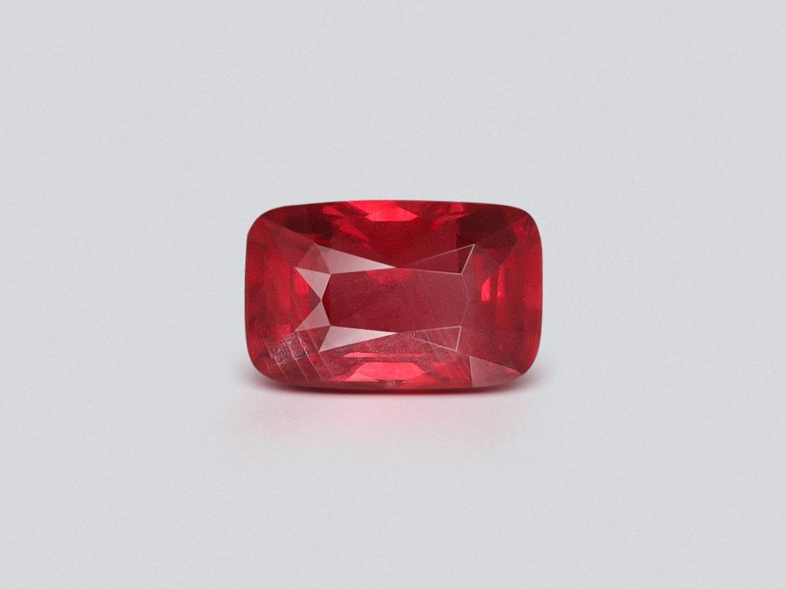
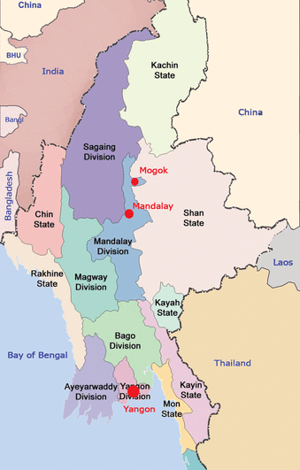
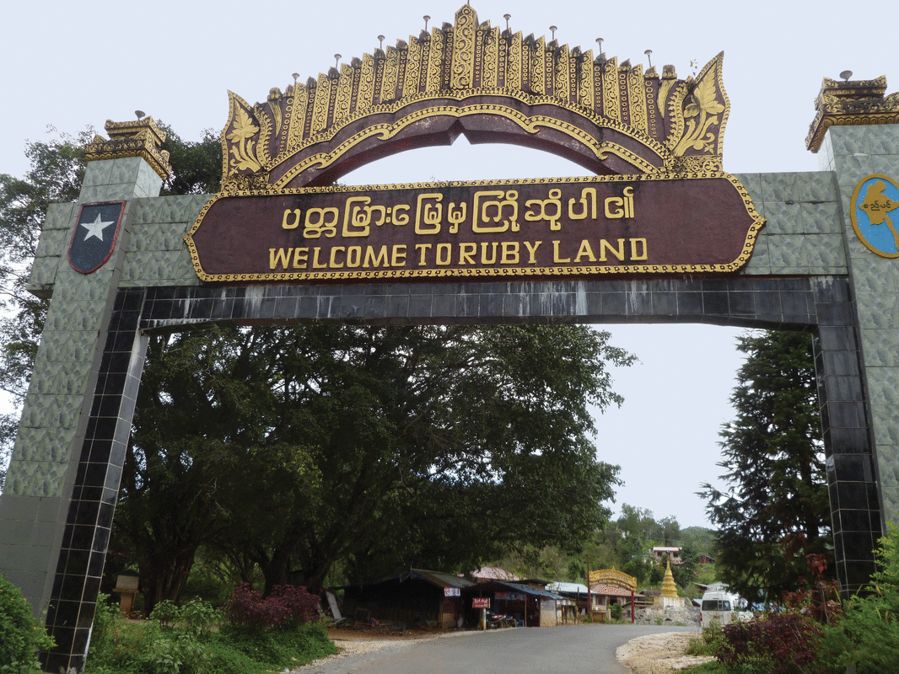
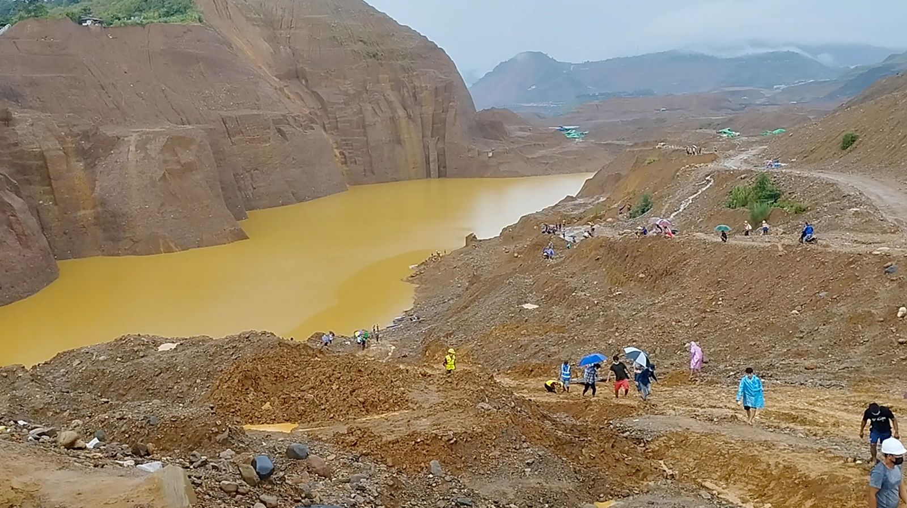
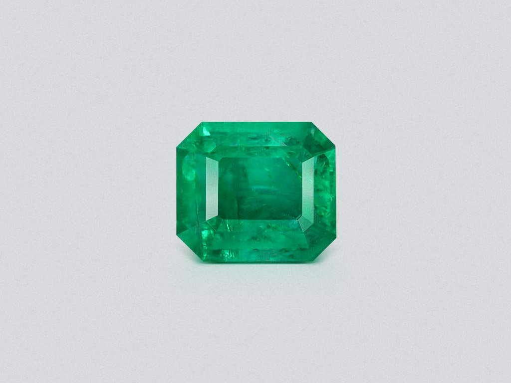
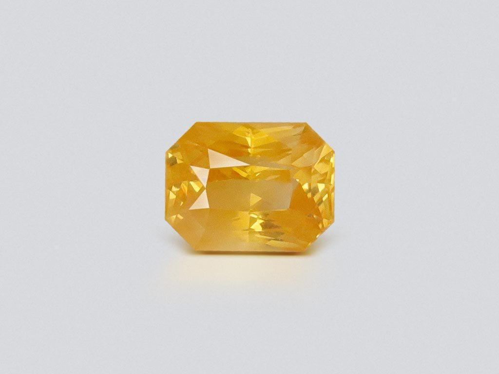

Some representative placeholder content for the second slide.

Third slide label
Some representative placeholder content for the third slide.

About Myanmar Gemstones
Myanmar, formerly known as Burma, is renowned for its exquisite gemstones. From the vibrant rubies of Mogok to the serene green jade of Kachin, Myanmar offers a treasure trove of precious stones admired worldwide.
Ruby Land: The Mogok Valley
The Mogok Valley in Myanmar is famously known as "Ruby Land." This region is celebrated for producing some of the world's finest rubies, characterized by their vivid "pigeon blood" color. Nestled in the mountains, Mogok is not only a treasure trove for rubies but also a picturesque location with a rich history and vibrant culture. Visitors to Ruby Land can witness the traditional methods of gemstone mining and experience the local heritage that has shaped the region's global reputation as a premier source of rubies.


Myanmar Mine
Myanmar is renowned for its high-quality rubies, particularly those from the Mogok Valley, often referred to as the "Valley of Rubies." Mogok has been a major source of some of the world's finest rubies for centuries.
Prized for their deep red "pigeon blood" color, exceptional clarity, and natural fluorescence. Another significant ruby deposit is in Mong Hsu, Shan State, which became an important source in the 1990s, though its rubies often require heat treatment to enhance their color. Myanmar’s ruby mining industry includes both traditional small-scale mining and large commercial operations using modern techniques. The trade in these gemstones plays a vital role in Myanmar’s economy, but it has also been linked to ethical concerns, including labor exploitation and environmental damage. Additionally, Myanmar’s gemstone trade has faced international sanctions due to political and human rights issues, with restrictions imposed by the US and other countries. Despite these challenges, Myanmar's rubies remain highly sought after in the global market, especially in countries like Thailand, China, and the US, with untreated Mogok rubies fetching some of the highest prices per carat.
Types of Gemstones
Ruby
Known as the "King of Gemstones," Myanmar rubies are prized for their deep red hue, often referred to as "pigeon blood."

Emerald
Myanmar is the top source of high-quality, especially the highly sought-after with its rich green color.

Sapphire
Myanmar sapphires come in a range of stunning blues, often displaying a velvety texture and exceptional clarity.
Myanmar's gemstone legacy dates back thousands of years. The Mogok Valley, often called the "Valley of Rubies," has been a significant source of precious stones since the 6th century. Jade mining in northern Myanmar has also been a cornerstone of the country's cultural and economic history.
The craftsmanship and artistry involved in transforming raw stones into dazzling jewelry reflect the deep cultural significance of gemstones in Myanmar.
What are the environmental impacts of mining in Myanmar?
Mining in Myanmar has led to deforestation, water contamination, and soil erosion in many areas.
In addition to the immediate impacts, mining operations have resulted in long-term ecological disruptions. Forests are cleared not only for the mines themselves but also for access roads and infrastructure, leading to habitat fragmentation and loss of biodiversity.
Water sources near mining areas are often contaminated with heavy metals and toxic chemicals, affecting both aquatic life and the health of nearby communities. The accumulation of sediments and waste can also change the natural flow of rivers, leading to further environmental degradation.
Moreover, the dust and particulate matter generated during mining contribute to air pollution, which can have serious health implications for local populations.
What is the main problem with mining?
The major issue with mining is balancing economic benefits with the social and environmental costs.
Beyond the obvious environmental damage, unregulated mining often leads to severe social challenges. Many mining operations are associated with unsafe working conditions, which put miners at risk of accidents and long-term health issues.
Additionally, local communities frequently face displacement and loss of traditional livelihoods, leading to social instability and conflicts over resource rights. The lack of adequate regulations exacerbates these issues, resulting in exploitation and unequal distribution of mining revenues.
Economic benefits may be significant on paper, but they often do not reach the communities most affected by the mining activities.
Why do people mine in Myanmar?
Many are drawn to mining in Myanmar due to the high global demand for its precious gemstones, which offer significant income opportunities.
Mining is often seen as a lucrative opportunity in regions where alternative employment options are scarce. The promise of extracting high-value gemstones like rubies, sapphires, and jade drives both small-scale artisanal miners and larger commercial operations.
For many local communities, mining represents not only a means to achieve financial stability but also a tradition that has been passed down through generations. The skills and techniques required for gemstone extraction and processing are deeply rooted in local culture.
However, the economic allure often comes with risks, including exposure to hazardous working conditions and the volatility of global gemstone prices.
What minerals are found in Myanmar?
Myanmar is rich in a variety of minerals including rubies, sapphires, jade, and emeralds.
In addition to these world-renowned gemstones, Myanmar is also home to a range of other valuable minerals. Deposits of tin, tungsten, and various industrial minerals contribute to the country's diverse resource base.
This rich geological variety not only makes Myanmar a key player in the global gemstone market but also provides raw materials for various industries. However, the extraction of these minerals often faces similar challenges of environmental degradation and social conflict.
The balance between exploiting these resources for economic gain and preserving the natural environment remains a critical issue for policymakers.
Is Myanmar jade expensive?
Yes, Myanmar jade is highly valued and can command premium prices due to its quality and rarity.
The high cost of Myanmar jade is driven by its unique properties, including exceptional translucency, vibrant colors, and a smooth, polished finish. These attributes make it one of the most sought-after types of jade in the international market.
Rarity also plays a major role; high-grade jade is limited in supply and often sourced from artisanal mining operations with little oversight. This scarcity, combined with the complex craftsmanship required to process the stone, significantly increases its market value.
Moreover, cultural significance and historical value further add to the premium pricing, making Myanmar jade a treasured asset for collectors and investors worldwide.